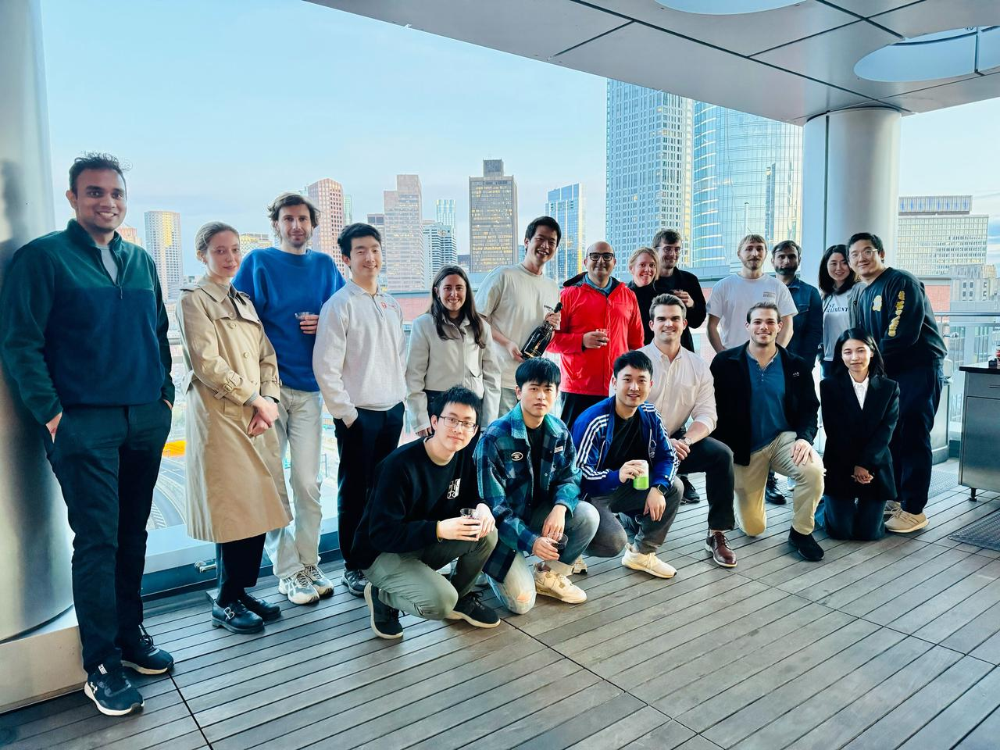
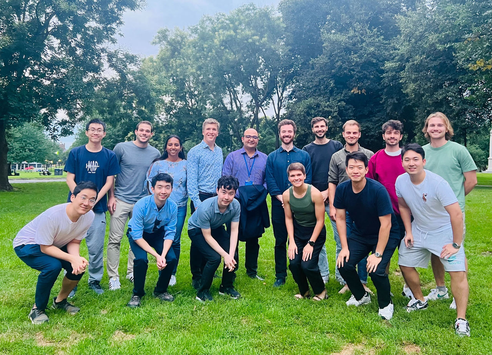
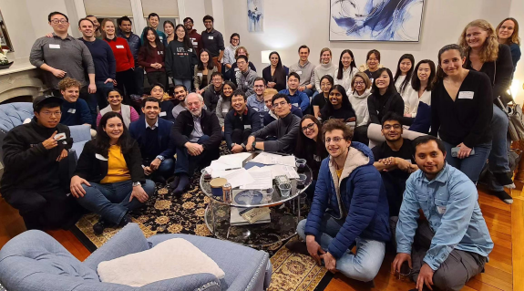

I work at the intersection of AI, computational biology, and more recently, education. From McGill to Harvard to MIT, my research has focused on applying machine learning to complex biological and social systems.
At Harvard Medical School, I worked with Prof. Faisal Mahmood on multimodal representation learning for computational pathology. At MIT, I collaborated with Dr. Manolis Kellis at CSAIL and the Broad Institute, and Dr. Leo Anthony Celi.
My master's thesis at the Mahmood Lab focused on multimodal representation learning for spatial transcriptomics in computational pathology.
Currently, I'm co-founder of LeadLearning, applying AI and systems thinking to education — building tools that transform how students learn.
我的研究方向横跨 AI、计算生物学与教育科技。从麦吉尔大学到哈佛大学再到 MIT，我始终专注于将机器学习应用于复杂的生物与社会系统。
在哈佛医学院，我与 Faisal Mahmood 教授合作，研究计算病理学中的多模态表征学习。在 MIT，我与 Manolis Kellis 教授和 Leo Anthony Celi 教授在 CSAIL 和 Broad 研究所合作开展计算生物学研究。
硕士论文在 Mahmood Lab 完成，研究方向为计算病理学中空间转录组学的多模态表征学习。
目前，我是 LeadLearning 励聆的联合创始人，将 AI 与系统思维应用于教育，构建帮助学生提升学习力的工具。


